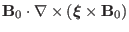
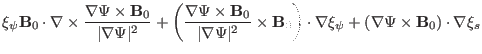
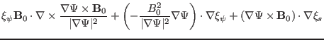
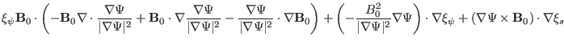
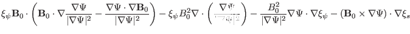
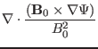
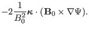
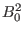

The component of the induction equation in the direction of
 is
written as
is
written as
The term on right-hand side of the above equation is written as
Using this, the right-hand side of Eq. (89) is written as
|  |
 |
 |
|
| |
|
 |
(91) |
| |
|
 |
|
| |
|
 |
(92) |
Before we try to simplify the above equation, we derive the expression for the
divergence of
 , which is written as
, which is written as
It can be proved that the fourth term of the above equation can be written as
(refer to (9.8) for the proof)
|  |
|
 |
(94) |
Then Eq. (93) is written as
Eq. (95) agrees with Eq. (23) in Cheng's paper, but a  factor
is missed in the fourth term of Cheng's equation[3]. Using Eq.
(95), Eq. (92) is written as
It can be proved that
 |
(97) |
(Refer to Sec. 9.10 for the proof.) Then Eq. (96) is
written as
and the component of the induction equation in the direction of
[Eq. (89)] is finally written as
Eq. (99) agrees with Eq. (22) in Cheng's paper[3].
yj
2015-09-04
![$\displaystyle \nabla \cdot \left[ \frac{\nabla \Psi}{\vert
\nabla \Psi \vert^2}...
..._0 \times \nabla
\Psi)}{B^2_0} \xi_s + \frac{\mathbf{B}_0}{B^2_0} \xi_b \right]$](img246.png)